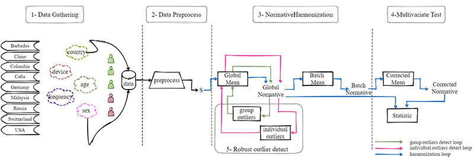
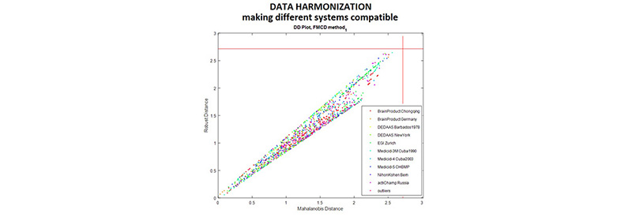

This project is a multi-national EEG normative initiative for creating international standards for MEEG analysis, under the focus of the Global Brain Consortium (GBC). The initiative is led by Dr. Pedro Valdes-Sosa, at the University of Electronic Science and Technology of China (UESTC) and it joins several scientists all around the world.
Background
The pilot phase of the project started in March 2021. This initial proof of concept aims to calculate populational normative descriptors at the scalp level and with a reduced set of 19 electrodes of the international 1020 system.
Resting state (eyes closed) EEG data from 1586 healthy subjects have been collected from 15 research groups, located in 9 countries across the Americas, Europe, and Asia.
Data Cohorts
Creating Signatures to describe EEG activity
Data Standardization and Quality Control
Novel Normative Methodologies
Pedro A. Valdes-Sosa
Deirel Paz-Linares
Shiang Hu
Min Li
Maria L. Bringas-Vega
Ariosky Areces-Gonzalez
Xu Lei
Rigel Wang
Dezhong Yao
Ying Wang
Alan C. Evans
Jorge F. Bosch-Bayard
Christine Rogers
Jessica Stone
Lidice Galan-Garcia
Mitchell J. Valdes-Sosa
Ana Calzada Reyes
Trinidad A. Virues-Alba
Eduardo Aubert-Vazquez
Pavel Rudych
Alexander N. Savostyanov
Nataliya S. Milakhina
Carlos A. Tobon-Quintero
John F. Ochoa-Gomez
Mohd Faizal
Mohd Zulkifly
Jafri Malin Abdullah
Hazim Omar
Muhammad R. Abdul Rahman
Aini Ismafairus Abd Hamid
Faruque Reza
Marius Tröndle
Nicolas Langer
Thomas Koenig
Leslie Prichep
Janina Galler
Lilia Morales-Chacon
Daysi Garcia
Arno Villringer (Director)